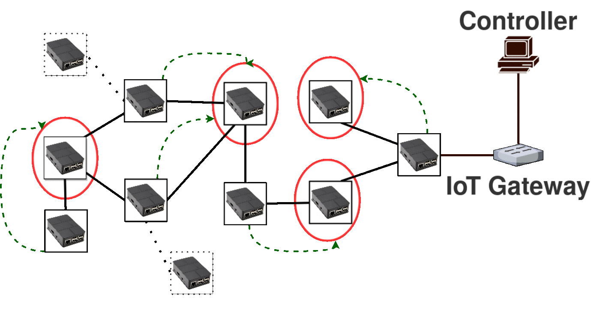

Features
Fault Tolerance
Aloe readjusts the μC containers in case any failure occures.
Elastic Auto-scalability
Depending on the topology change Aloe finds suitable placement of μC
Fast Flow Installation
The μCs are placed near to the data plane devices. Therefore, IoT short flows are installed quickly.

Self-stabilizing Algorithm
| Aloe relies on a self-stabilizing maximal indipendent set (SS-MIS) algorithm for μC placements. It ensures that the distributed SS-MIS converges in linear time. Once the SS-MIS converges, the independent set is labeled as the set of μCs. |
 |